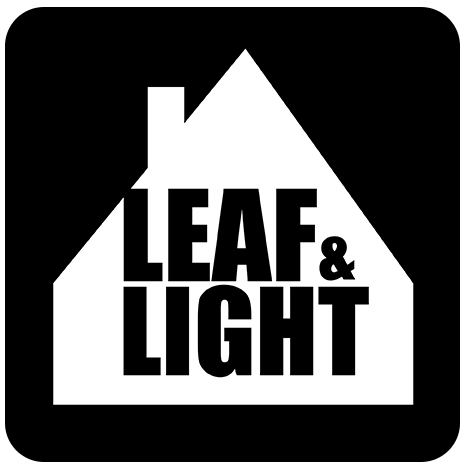
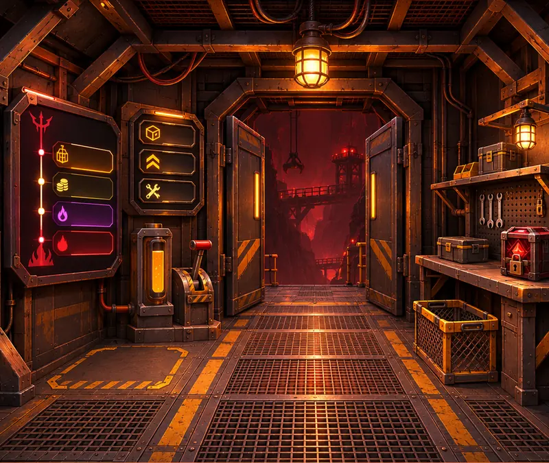
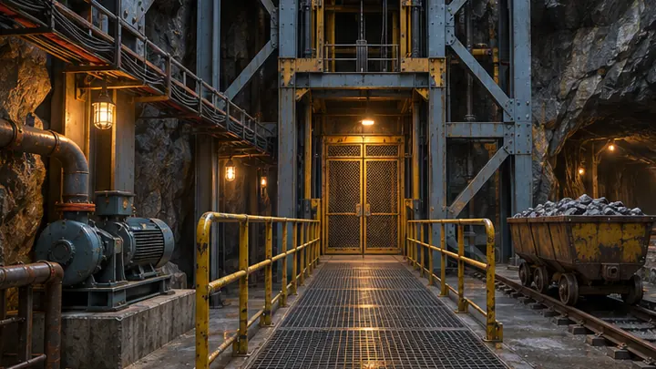
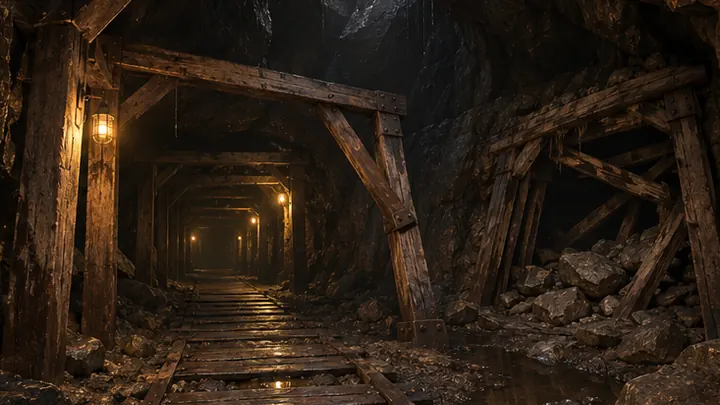
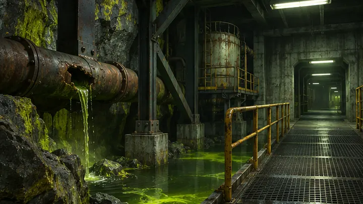
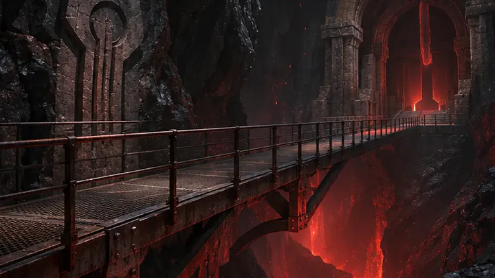

Explore
Use a lanterna para ler a galeria, encontre veios de minério e ouça o que se move acima das vigas.

Leaf & LightStudioEm desenvolvimento para Meta Quest
Toda descida tem um preço.
Um roguelite de terror, mineração e extração em VR. Entre na mina, reúna almas e volte para o elevador antes que a escuridão te alcance.
Entrar no elevador
01 / A cabine
Você está descendo para encontrar Nyra, a voz do outro lado do interfone. Mas quem decide quando as portas fecham é Vexa.
Ela cobra em almas, conhece cada ruído no poço e fica um pouco mais curiosa toda vez que você volta vivo.
Ver como se joga04 / O ciclo
Use a lanterna para ler a galeria, encontre veios de minério e ouça o que se move acima das vigas.
Recolha minério, peças e almas. Escolha o que carregar enquanto ainda tem as mãos livres.
Volte à cabine, prepare equipamento e pague a viagem. Derrube o chefe para abrir o próximo setor.
08 / Mapa da descida
Quatro setores rumo ao Inferno. Cada um tem seus próprios perigos e um chefe guardando a descida.




12 / Limiar do Inferno
Deep Descent está em desenvolvimento para Meta Quest.
Voltar à superfície